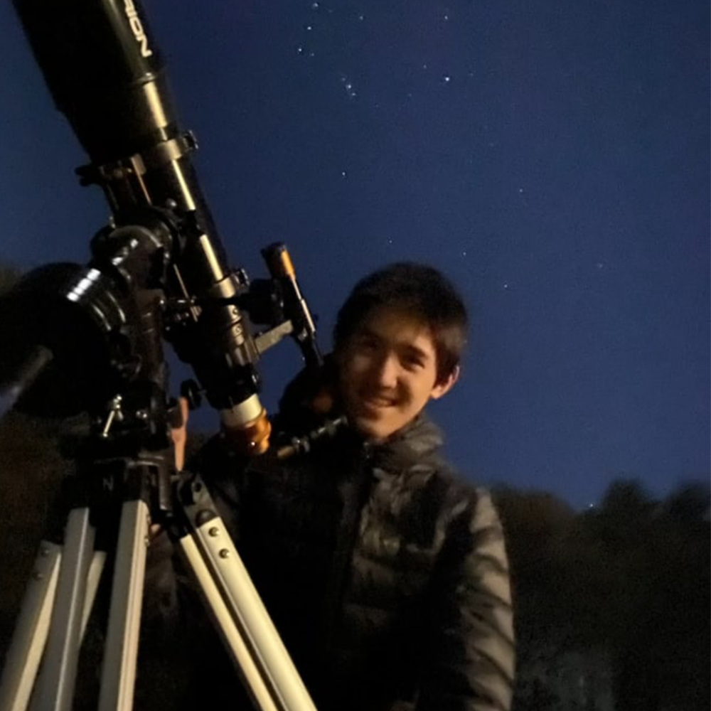
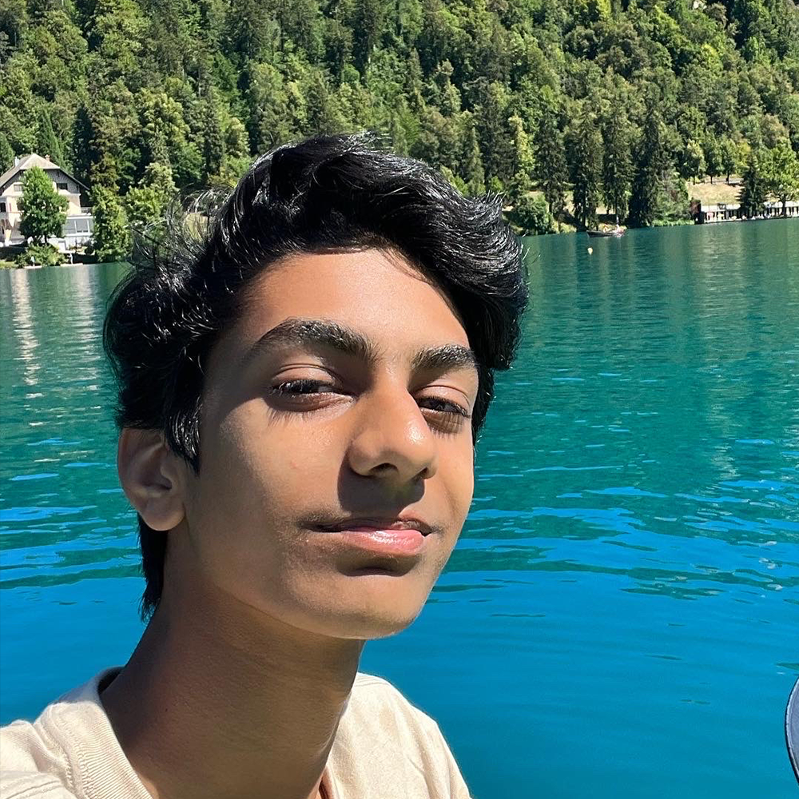
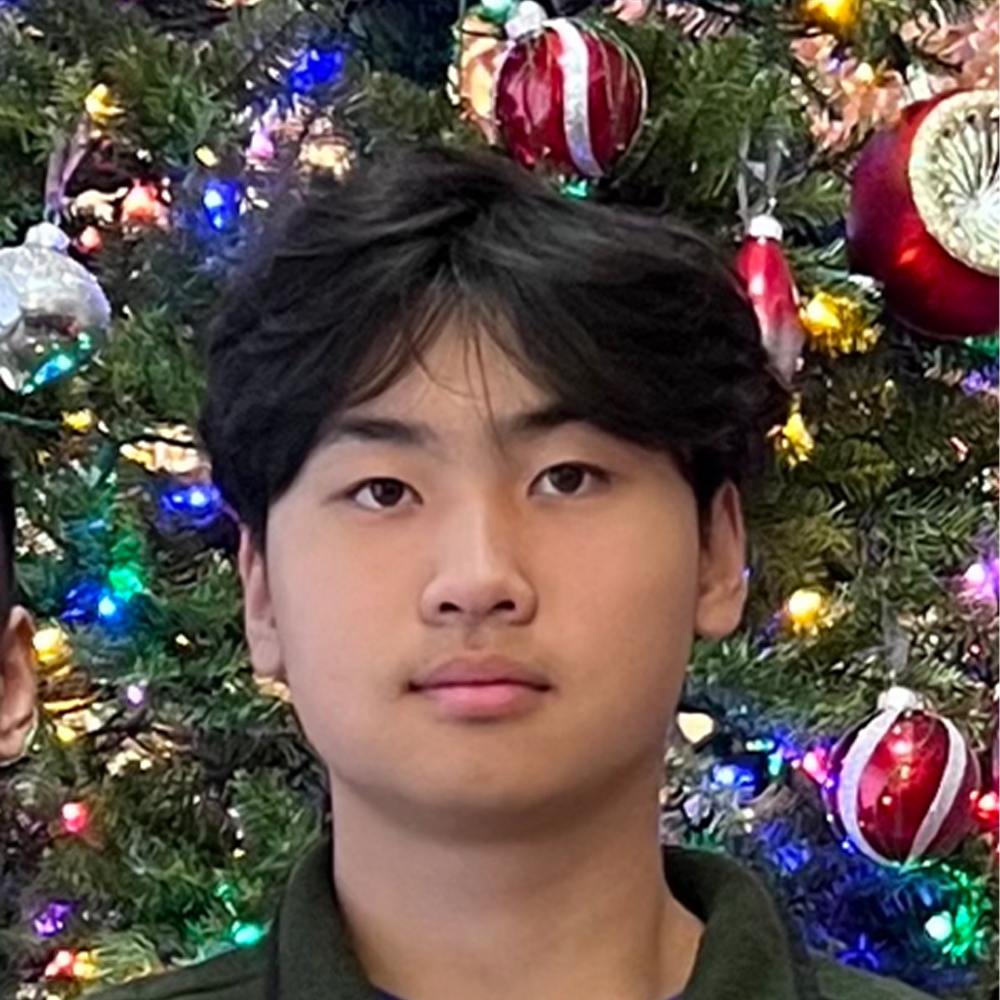

Grant Hough
Founder and Primary Instructorr
Grant Hough is a rising senior at Saratoga High School with interests in computer science and percussion. He has received multiple computer science-related awards including ones from the Congressional App Challenge and various hackathons. Grant has tutored and taught topics such as mobile development, web development, browser extension development, and machine learning to a wide range of ages. He is the primary instructor for "Zero to AI Web Apps" and is the designer of both the course curriculum and website. He's excited for this summer and hopes to bring the future of web apps within reach.
Instructors
Stefan Murphy

Experienced in web and mobile development, Stefan frequently competes and places in coding competitions such as hackathons. He loves to teach and can't wait for this summer to begin.
Wesley Deklich
Wesley has experience as both a software intern and web developer, with multiple sites under his belt. He looks forward to helping students discover the power of web development.
Tanuj Siripurapu
Tanuj is experienced in web development and machine learning, and has won multiple hackathons. He loves to spread knowledge about computer science and is excited for this summer.
Justin Jiang
Justin is experienced with and enjoys web development, while also being interested in machine learning. Justin is eager to spread his knowledge and give back to the community.